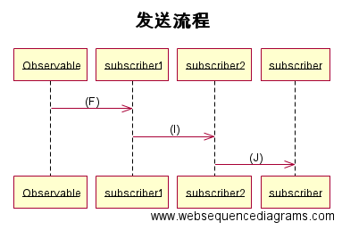

RxJava中常用的”变换”
RxJava中的所有的操作 map、flatMap、groupBy、scan、concat等等 (这些操作方法的具体使用请看另一篇文章) 都是一种”变换”。为了更好地实现复杂的链式操作，我们就需要来好好解析下它的工作原理了。
RxJava”变换”的原理
这是map()的源码(源码版本为RxJava1.1.6)，其中调用了”变换”的核心方法left()，我们先来分析下这段代码：
//Observable.java
public final <R> Observable<R> map(Func1<? super T， ? extends R> func) {
return lift(new OperatorMap<T， R>(func));
}
public final <R> Observable<R> lift(final Operator<? extends R， ? super T> operator) {
return new Observable<R>(new OnSubscribeLift<T， R>(onSubscribe， operator));
}
//OnSubscribeLift.java
@Override
public void call(Subscriber<? super R> o) {
try {
Subscriber<? super T> st = hook.onLift(operator).call(o);
try {
// new Subscriber created and being subscribed with so 'onStart' it
st.onStart();
parent.call(st);
} catch (Throwable e) {
// localized capture of errors rather than it skipping all operators
// and ending up in the try/catch of the subscribe method which then
// prevents onErrorResumeNext and other similar approaches to error handling
Exceptions.throwIfFatal(e);
st.onError(e);
}
} catch (Throwable e) {
Exceptions.throwIfFatal(e);
// if the lift function failed all we can do is pass the error to the final Subscriber
// as we don't have the operator available to us
o.onError(e);
}
}
通过上面的源码我们可以得知”变换”left()的流程如下（有些代码没有列出，此处不再赘述，感兴趣的朋友可以去Github上详细看下）： 通过hook.onLift(operator)执行封装的操作，通过call()传入原始Subscriber然后封装成新的Subscriber，然后通知父Observable来处理这个新的Subscriber。
简述: 1. 创建一个新的Observable（被观察者） - 新的Observable的call()中 a. 通过Operator来创建一个新的Subscriber（观察者）。 b. 调用父Observable的call方法通知它对新创建的Subscriber进行处理。
我们通过下面的一个例子来理解下整个链式操作的流程：
Observable.just("hello"， "my"， "name"， "is"， "nichool")
.map(new Func1<String， String>() {
@Override
public String call(String s) {
return "map: " + s;
}
})
.map(new Func1<String， String>() {
@Override
public String call(String s) {
return "map1: " + s;
}
})
.subscribe(new Action1<String>() {
@Override
public void call(String s) {
LogUtils.LogW(s);
}
});
先预想下将会打印的Log是什么！！.
我们来一步一步分析，上面的代码可以分成下面这几个流程：

执行流程时序图中(A)操作: 也就是刚才的left()的简述
时序图(B)操作：Observable2.subscribe()将注册的Subscriber传入并调用call()，开始通知流程

通知流程时序图中操作： (C) : 调用Observable2.call() - ( 就是left()中call方法）生成新的Subscriber subscriber2 然后调用Observable1.call(); (D) : 调用Observable1.call() - 生成 subscriber1，调用 Observable.call(); (E) : 调用Observable.call() - 将封装了所有操作的subscriber1传入call方法中，开始发送流程

发送流程时序图中操作： (F) : 调用subscriber1 中的onNext 等方法 (I) : 调用subscriber2 中的onNext 等方法 (J) : 调用subscriber(此处为上面代码中的subscribe()方法中的Subscriber) 中的onNext 等方法
整个流程合起来的流程图 下图来源 
这是结果的Log
RxJavaDemo: map1: map: hello
RxJavaDemo: map1: map: my
RxJavaDemo: map1: map: name
RxJavaDemo: map1: map: is
RxJavaDemo: map1: map: nichool
总结
RxJava中”变换”的核心就是将操作封装成新的观察者，多个”变换“的链式操作也就是多个观察者与被观察者相互通知与处理的流程，整个RxJava项目通过这种代理的思想来实现复杂的逻辑。(真心厉害！！！)
本文的分析将非常有助于线程调度方面的理解！！